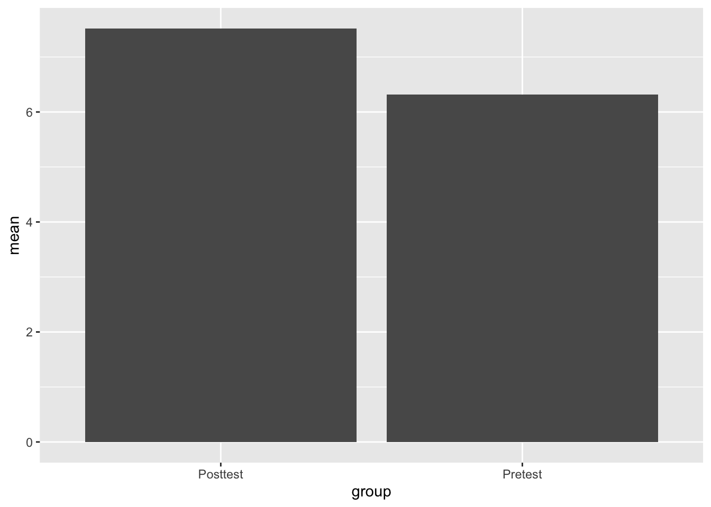
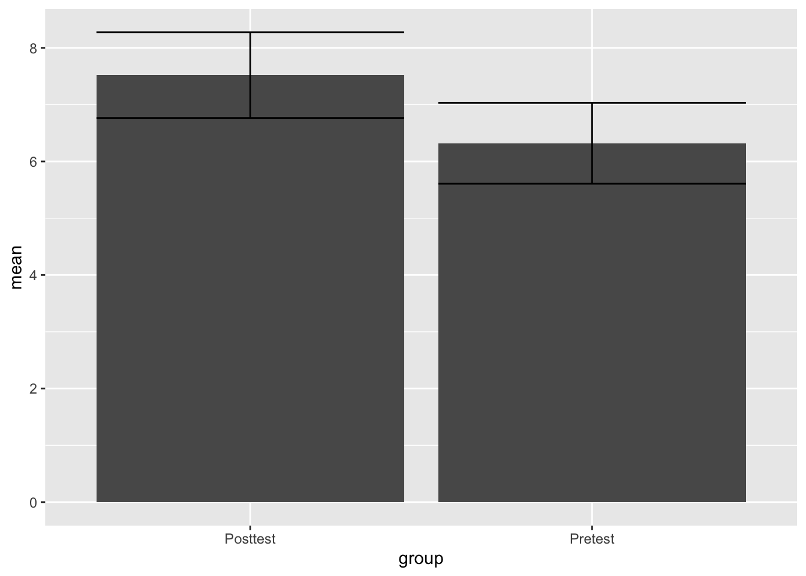
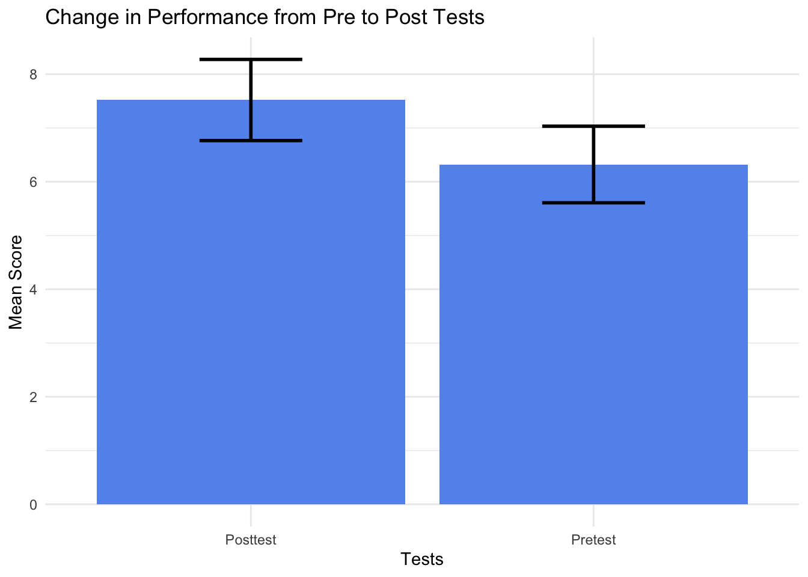
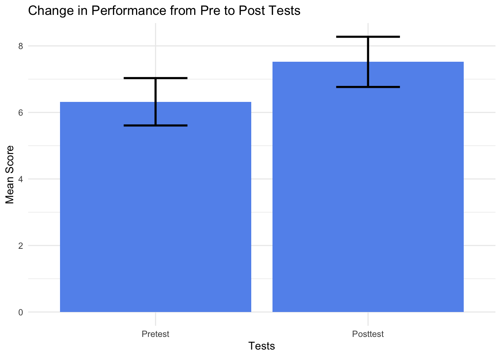

####Paired samples t-test
*Make sure to read the description of the independent t test before moving to the paired t-test
Here’s two books that would be good to reference for this discussion. - Chapter 10 from Field, A. (2017). Discovering Statistics Using IBM SPSS Statistics (5th Edition). SAGE Publications, Ltd. (UK). - Chapter 13 & 14 from Pagano, R. (2010). Understanding Statistics in the Behavioral Sciences (9th Edition). Wadsworth.
The paired samples t-test is very similar to the independent t-test and the basic assumptions regarding the the two groups are the same.
Null Hypothesis - Experimental Group = Control Group
Alternative Hypothesis - Experimental Group \(\neq\) Control Group
The difference in the paired samples t-test is that a single group goes through both the experimental and control conditions. The control condition is sometime referred to as the baseline, it’s the measurement of a dependent variable without the presence of the independent variable.
For example, assume you are testing the effectiveness of a new drug on treating depression. You measure the current level of a sample of persons who are currently experiencing depression (baseline) then allow them to take the new drug for a month and then measure their depression a second time. So the assumptions of our two hypotheses would look something like this:
Null Hypothesis - Before taking the drug = After taking the drug
Alternative Hypothesis - Before taking the drug \(\neq\) After taking the drug
The equation is similar to the equation for the z test.
\[ z = \frac{x - \mu}{\frac{\sigma}{\sqrt{n}}} \]
Remember that the z test really boils down to the difference between the population mean and the sample mean divided by the standard error.
Let’s look at the formula and then we can break down the elements.
\[ t = \frac{\bar D - \mu_{D}}{\frac{s_{D}}{\sqrt{n}}} \] The first element is the mean of the difference scores \(\bar D\). The t test calculates the difference between each subject before and then after the introduction of the independent variable. For our example, it would be the difference in their level of depression before and after taking the new drug. AFter all the differences are calculated the mean difference is found \(\bar D\). Obviously, if the independent variable has an effect, this number should have some amount of magnitude.
The second element to look at is the mean of the population for difference scores assuming the null hypothesis is true \(\mu_{D}\). Remember that the Null hypothesis assumes no difference between the sample means, so it assumes that this sample of differences scores comes from a population with zero different or has a mean value of 0.
\[ \mu_{D}=0 \]
Since this value is zero, it basically falls out of the equation, but it does remind us of the basis for this kind of t test. The comparison in the formula is between a sample and a population as we saw in the z test. However, in this cases it’s a sample of difference scores compared to a population of difference scores with an assumed mean of zero as noted in the equation above, so the hypotheses have these assumptions.
Null Hypothesis - The sample can reasonably be said to have come from a popultion of differnce scores with a mean of zero. Any difference between the means is the result of measurement error
Alternative Hypothesis - The sample can not reasonably be said to have come from a population of difference scores with a mean of zero because the difference is too great and not the result of measurement error.
As before with the z test, we need some kind of value to compare to the mean difference. In this case, as with the z test, the comparison is to the error. More specifically to the measurement error that could reasonably be expected based on random variation. This value is known as the standard error of the differences. This standard error is an indicator of the size of potential differences in sample means based on sampling variation.
Here’s the formula/symbols \[ \frac{s_{D}}{\sqrt{n}} \]
If you look closely, this formula looks remarkably similar to the standard error of the mean (because it is!) but notice how the standard deviation from the population \(\sigma\) has been replaced with the standard deviation from the sample \(s\). What is unique about the standard error of the differences is that it uses the standard deviation from the sample as an estimate of the standard deviation from the population.
Once the t score is found using the formula, it is compared to the t distribution, which is very similar to the z distribution.
The sampling distribution of t is a probability distribution of t values that would occur if all possible different samples of a fixed size N were drawn from the null hypothesis population (Pagano, p. 320)
The t distribution varies based on the degrees of freedom, which is directly related to N. Just the the z distribution, the t distribution has a mean of zero and as t values get larger, they are situated on the tails of the distribution as either positive or negative numbers. Just like with z scores, the larger the t score the less likely the sample of obtained difference scores can reasonably be assumed to have come from a population of differnce scores with a mean of zero.
For the example import the following dataset.
ch14ds1 <- read.csv("ch14ds1.csv")Check out dataset
View(ch14ds1)View in Console
ch14ds1## Pretest Posttest
## 1 3 7
## 2 5 8
## 3 4 6
## 4 6 7
## 5 5 8
## 6 5 9
## 7 4 6
## 8 5 6
## 9 3 7
## 10 6 8
## 11 7 8
## 12 8 7
## 13 7 9
## 14 6 10
## 15 7 9
## 16 8 9
## 17 8 8
## 18 9 8
## 19 9 4
## 20 8 4
## 21 7 5
## 22 7 6
## 23 6 9
## 24 7 8
## 25 8 12Notice that this is a fairly straightforward pre vs. posttest dataset.
Use the summary command to look at the descriptive statistics
summary(ch14ds1)## Pretest Posttest
## Min. :3.00 Min. : 4.00
## 1st Qu.:5.00 1st Qu.: 6.00
## Median :7.00 Median : 8.00
## Mean :6.32 Mean : 7.52
## 3rd Qu.:8.00 3rd Qu.: 9.00
## Max. :9.00 Max. :12.00The means between the two groups are different and we can calculate the difference.
7.52-6.32## [1] 1.2Of course, we need to determine whether this difference is significant or not. So let’s use r to run the paired samples t test. Notice that the code is fairly straightforward. Start with the t.test command and then list the two variables that are being analyzed, followed by lettting R know you want to perform a paired test paired = TRUE.
t.test(ch14ds1$Posttest, ch14ds1$Pretest, paired = TRUE)##
## Paired t-test
##
## data: ch14ds1$Posttest and ch14ds1$Pretest
## t = 2.4495, df = 24, p-value = 0.02198
## alternative hypothesis: true mean difference is not equal to 0
## 95 percent confidence interval:
## 0.1889003 2.2110997
## sample estimates:
## mean difference
## 1.2Based on the results, there does appear to be a significant difference between the pre and post tests.
List the effect size as well using Cohen’s d - Subtract the means from each other and divide by the standard deviation of the control group
Cohens_d <- (7.52-6.32)/1.73
Cohens_d## [1] 0.6936416This time let’s use a ggplot to make a better looking bar graph. Check out the format of the data
ch14ds1## Pretest Posttest
## 1 3 7
## 2 5 8
## 3 4 6
## 4 6 7
## 5 5 8
## 6 5 9
## 7 4 6
## 8 5 6
## 9 3 7
## 10 6 8
## 11 7 8
## 12 8 7
## 13 7 9
## 14 6 10
## 15 7 9
## 16 8 9
## 17 8 8
## 18 9 8
## 19 9 4
## 20 8 4
## 21 7 5
## 22 7 6
## 23 6 9
## 24 7 8
## 25 8 12The data is set up for a paired t test, so it includes 2 numeric variables. This is a problem because a single factor variable is missing that would be used to describe our two bars (i.e. pre and post test).
Thus, we need to create a second dataset or dataframe that has a factor variable (“Group”) and numeric (“Test”) variable. A new object is created called “TestData”. The factor variable is created from scratch using the “rep” repeat function and then adding together the Pre and Post Test scores into a single numeric variable.
TestData <- data.frame(
group= rep(c("Pretest", "Posttest"), each=25),
Test = c(ch14ds1$Pretest, ch14ds1$Posttest)
)Next, find the descriptive statistics for this new dataset
library(dplyr)
Test_Descriptives <- TestData %>%
group_by(group) %>%
summarize(n = n(),
mean = mean(Test),
sd = sd(Test),
se = sd / sqrt(n),
ci = qt(0.975, df = n - 1) * sd / sqrt(n))Check the descriptives and make sure they turned out ok.
Test_Descriptives## # A tibble: 2 × 6
## group n mean sd se ci
## <chr> <int> <dbl> <dbl> <dbl> <dbl>
## 1 Posttest 25 7.52 1.83 0.366 0.755
## 2 Pretest 25 6.32 1.73 0.345 0.712Finally, create a basic bar graph
ggplot(Test_Descriptives,
aes(x = group,
y = mean)) +
geom_bar(stat = "identity")
Then let’s add in some error bars with the geom_errorbar function.
ggplot(Test_Descriptives,
aes(x = group,
y = mean)) +
geom_bar(stat = "identity") +
geom_errorbar(aes(ymin=mean-ci,
ymax=mean+ci))
Finally, let’s make it look really nice
ggplot(Test_Descriptives,
aes(x = group,
y = mean)) +
theme_minimal() +
geom_bar(stat = "identity", fill="cornflowerblue") +
geom_errorbar(aes(ymin=mean-ci,
ymax=mean+ci), width=.3, size=1) +
labs(title = "Change in Performance from Pre to Post Tests",
y="Mean Score", x="Tests")
You can also flip the columns to make it look cleaner
ggplot(Test_Descriptives,
aes(x = group,
y = mean)) +
theme_minimal() +
geom_bar(stat = "identity", fill="cornflowerblue") +
geom_errorbar(aes(ymin=mean-ci,
ymax=mean+ci), width=.3, size=1) +
labs(title = "Change in Performance from Pre to Post Tests",
y="Mean Score", x="Tests") +
scale_x_discrete(limits=c("Pretest", "Posttest"))
Finally, we can write out the results, which is essentially the same format as the independent t test.
On average, scores on the posttest were larger (M = 7.52, SE = .37) than the scores on the pretest (M = 6.32, SE = .35). This difference, 1.2, 95% CI[.19, 2.21], was significant t(24) = 2.45, p = 0.02. The results represented an effect size of d = 0.69.*